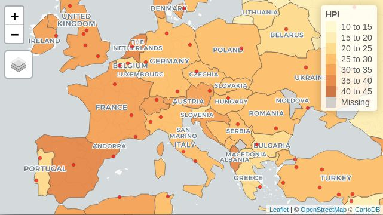
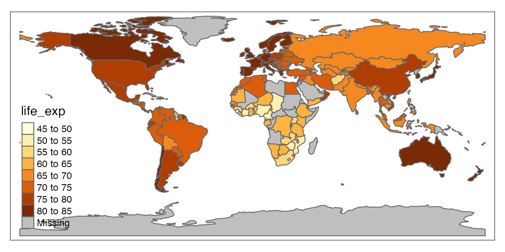
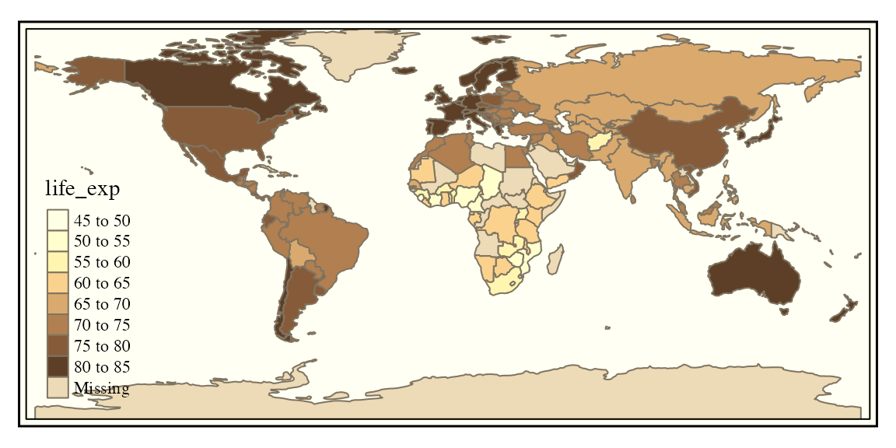
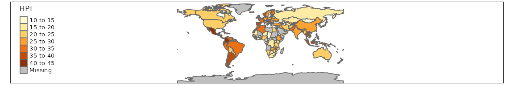
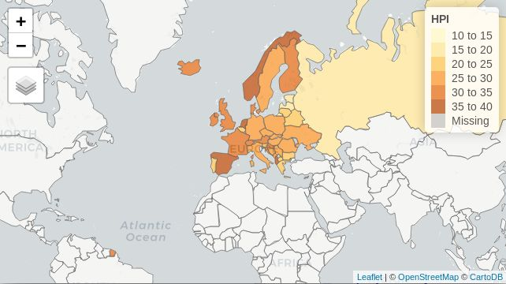

This vignette summarizes the main changes in tmap 2.x/3.x in comparison to tmap 1.11-2, which is described in detail in the JSS paper. The code of this paper for version 2.x/3.x can be found in vignette("tmap-JSS-code").
For people who are new to tmap, see vignette("tmap-getstarted").
As of version 2.0, all tmap functions have the prefix tm_ or tmap_, with the exception of the function qtm. Just like in tmap version 1.x, the layer functions start with tm_. In tmap 1.x, the names of the other functions where inconsistent, e.g. animation_tmap and tmap_arrange. In tmap 2.x/3.x, these functions are prefixed with tmap_. For instance animation_tmap has been renamed to tmap_animation.
tmap 1.x uses sp for representing vector data, and raster for raster data. tmap 2.x uses sf for representing vector data, and raster for raster data. tmap 3.x uses sf for representing vector data, and stars for raster data.
sf (simple features) objects have a simpler structure than sp objects. An sf object is nothing more than a data.frame with a special geometry column that contains the geometries for the corresponding rows. Such a geometry can be of type spatial point(s), line(s) or polygon(s) or any combination of these in a ‘geometrycollection’ (see vignette("sf1")). The layers functions, such as tm_polygons, will only draw what they are supposed to draw (in this case polygons). The newly added layer function tm_sf will draw all geometries.
Finally, all data objects in tmap (except land) have been transformed into sf objects. The object land has been transformed into a stars object.
Layer functions have been added to facilitate tile layers. In version 1.x, it was already possible to add basemaps. In version 2.0, this is facilitated by the explicit layer functions tm_basemap and tm_tiles. The former creates a basemap tile and the latter an overlay tile. The difference is that tm_basemap layers are always drawn at the bottom, whereas the plotting order of (overlay) tm_tiles layers is derived from the plot call. Overlay layers should be semi-transparent to be useful.
Tip: all tilemaps from https://leaflet-extras.github.io/leaflet-providers/preview/ can be used. The names of these maps can also be found in the list object leaflet::providers.
data(World, metro)
tmap_mode("view")
tm_basemap(leaflet::providers$CartoDB.PositronNoLabels, group = "CartoDB basemap") +
tm_shape(World) +
tm_polygons("HPI", group = "Countries") +
tm_tiles(leaflet::providers$CartoDB.PositronOnlyLabels, group = "CartoDB labels") +
tm_shape(metro) +
tm_dots(col = "red", group = "Metropolitan areas")
There are many options in tmap. In version 1.x, the default values were stored in tm_layout and tm_view. Wrapper functions like tm_style_gray and tm_format_World where used to change these options.
In version 2.0, the options are stored in a similar fashion to the global options. A list of tmap options can be retrieved and options can be set with the function tmap_options. Its behavior is similar to the base function options.
A style is a configuration of the options used to style a map in a specific way. When set with tmap_style, the current options are overwritten according to the new style. The changes can be seen with tmap_options_diff and can be reset with tmap_options_reset.

tmap_style("classic")
## tmap style set to "classic"
## other available styles are: "white", "gray", "natural", "cobalt", "col_blind", "albatross", "beaver", "bw", "watercolor"
qtm(World, fill = "life_exp")
tmap_options_diff()
## current tmap options (style "classic") that are different from default tmap options (style "white"):
## $sepia.intensity
## [1] 0.7
##
## $frame.double.line
## [1] TRUE
##
## $fontfamily
## [1] "serif"
##
## $compass.type
## [1] "rose"
##
## $basemaps
## [1] "Esri.WorldTopoMap"
##
## $basemaps.alpha
## [1] 0.5
tmap_options_reset()
## tmap options successfully resetStyles included in tmap are: "white", "gray", "natural", "cobalt", "col_blind", "albatross", "beaver", "bw", "classic". New styles can saved and loaded with tmap_style_save and tmap_style_load respectively.
In version 1.x, tmap contained a couple of predefined format functions, such as tm_format_World. In version 2.0, these have been replaced by the general function tm_format. With this function, the available formats can be retrieved, as well as the configuration of a specific format. With the function tm_format_add new formats can be created.
tmap_format()
## available formats are: "World", "World_wide", "NLD", "NLD_wide"
panorama <- tmap_format("World")
panorama$asp <- 6
tmap_format_add(panorama, name = "panorama")
## format panorama succesfully added. Use this format with tm_format("panorama")
tmap_format()
## available formats are: "World", "World_wide", "NLD", "NLD_wide", "panorama"Unlike a style, a format cannot be set globally. Instead, it has to be specified in each plot:
tm_shape(World) + tm_polygons("HPI") + tm_format("panorama")
# or: qtm(World, fill = "HPI", format = "panorama")Viridis palettes (from the viridis/viridisLite package) are supported natively. E.g. qtm(World, "HPI", fill.palette = "-plasma"). Notice that, like with the color brewer palette names, a minus sign will reverse the palette. See tmaptools::palette_explorer() to explore the color brewer and viridis palettes interactively.
The arguments that define the color palette mapping has been made more intuitive. The newly added layer function arguments midpoint and stretch.palette replace auto.palette.mapping:
stretch.palette determines whether a palette is stretched out when there are more categories than available colors. If set to FALSE, the palette is repeated.midpoint determines which value should be mapped to the middle (neutral) color of the diverging color palette. By default, it is set to 0 if there are positive and negative values. This could mean that only a part of the color palette is used, e.g. when the value range is [-5, 20] and the palette is "RdBu", the colors will range from light red (-5) to white (0) to dark blue (20). If there are only positive or only negative values, the full palette is shown.midpoint has been specified, the palette is regarded as a diverging palette, with the middle color interpreted as the neutral color.The argument filter has been added to tm_shape. Features that are included will be visualized as usual. Excluded features will still be visualized but without color being mapped. Instead, they will be colored with colorNULL, a new argument of the layer functions. Note the difference with colorNA, which is used to color features with missing data.
To show the potiential of this filter the following code chunk creates a map in which only European countries are colored:
tm_shape(World, filter = World$continent=="Europe") +
tm_polygons("HPI", id = "name")
Countries outside Europe are colored with colorNULL, which is grey95 by default. It can be adjusted in the layer functions, such as tm_polygons, and in tmap_options.
There are also missing values in the data (Kosovo and Moldova) which are colored with the colorNA (by default grey85).